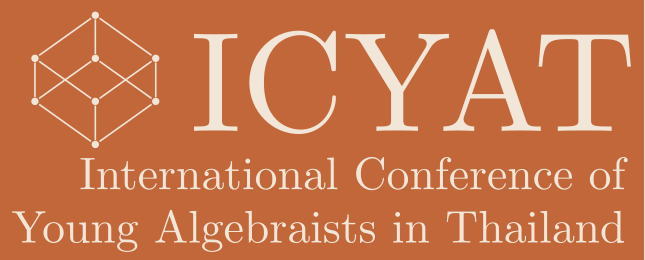

International Conference of Young Algebraists in Thailand (ICYAT)
About the Conference
The Conference of Young Algebraists in Thailand (ICYAT) is a prominent academic event dedicated to the field of algebra and related areas. Established in 1996 by Tiang Poomsa-ard and his colleagues at Khon Kaen University, the conference began under the name Conference of Young Algebraists in Thailand (CYAT) as a platform for mathematicians across Thailand to share research findings, exchange ideas, and foster collaborations.